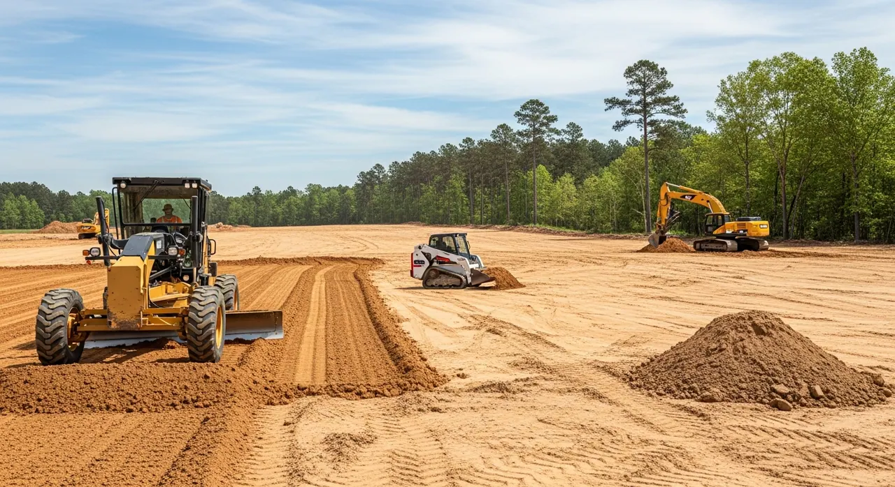

Walk the property
Review the need, access, water movement and intended land use together.
Clearing, grading, drainage and ongoing care for working properties of an acre or more. Serving Upstate South Carolina and Greater Charlotte.

These illustrations explain the kinds of work. Authentic project records will show the property, scope and outcome.

Shape the ground for access, drainage and the next stage.
Explore scope →
Look after banks, vegetation and visible water movement.
Explore scope →
Coordinate clearing, grading, drainage and new surfaces.
Explore scope →Owner decision: whether estates, HOA common areas and large residential acreage are eligible. Current live copy excludes residential services.
Equipment should make the work understandable: shaping ground, moving material, managing vegetation and restoring access.
Actual fleet ownership, models, operators and capability facts require owner verification.
Review the need, access, water movement and intended land use together.
Identify the work, order, responsibilities and any specialist approvals.
Greenville, Spartanburg, Anderson and surrounding communities.
Explore the region →Charlotte and surrounding NC communities, including SC border counties.
Explore local coverage →The live review presentation includes feedback about pond growth cleanup, quality and communication. Link to original reviews and retain source dates; pair a review with project facts only after confirming the connection.
Review the proposed feedback system →Tell us where it is and what needs attention.